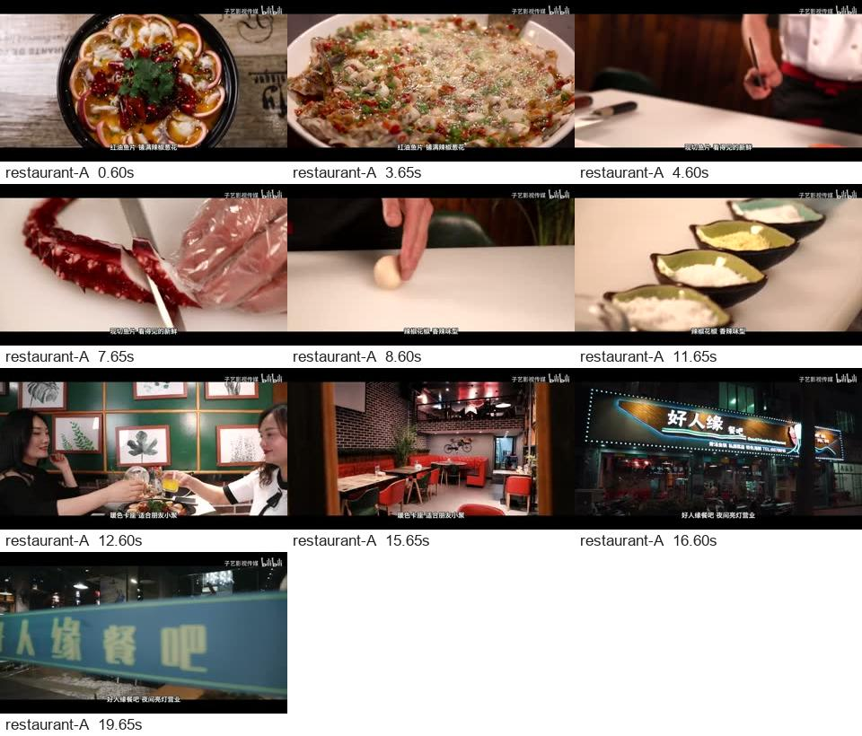
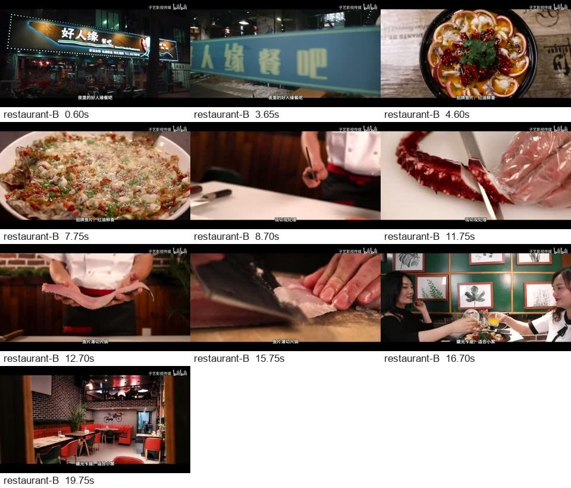
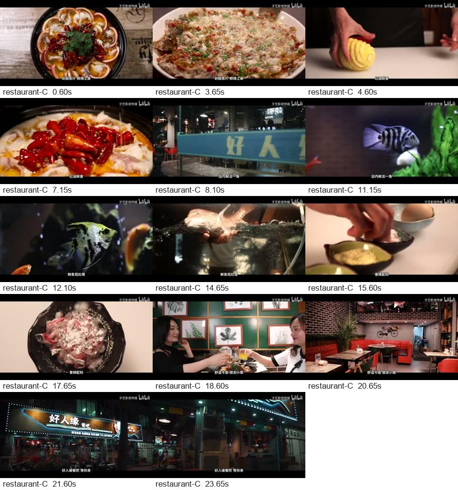
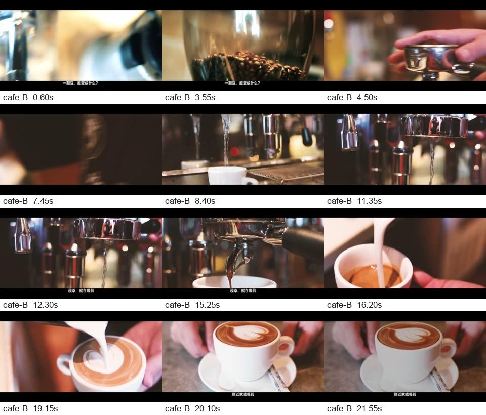

2026-10-21 · 独立素材分支 · DeepSeek 实际调用／FFmpeg 本机渲染
能出粗剪，还不能稳定交付。
两组真实餐饮实拍素材，统一要求做 20 秒到店兴趣短片，各出三版候选。最终得到四条可播放预览；咖啡批次保留失败。没有人工重排、改字幕或修正选段后再归功于 DS。
测试边界原素材是网上已经剪好的宣传片，保留其摄影、调色、音乐、转场和水印；不是门店员工直接上传的一组原始镜头。本轮测试横版 16:9，不证明竖版矩阵内容或真实发布表现。公开素材仅作本机研发对照。
评审依据：渲染结果逐段抽帧、完整时间线、实际失败回执和黑场检测。未完成逐耳听审或受众测试，因此不对音乐听感、卡点准确率和流量表现打分。
共同需求：为这家真实门店制作一条20秒的短视频，让附近潜在顾客看完有兴趣到店。用已有实拍画面选镜、重组、控制节奏。不要照搬原片顺序或连续截取一段，也不要制造不存在的店名、价格、优惠、地址和口碑。字幕简短自然，保留有用原声。不要添加AI生成画面。
好人缘餐厅实拍测试
【无缝转场】餐厅广告拍摄 · 子艺影视传媒 · 原片 75.9 秒 · 2020 年发布
三版候选及预览完成，未替用户采用。
餐厅 A · 菜品开场
20.0 秒／5 段，每段 4 秒
开场有菜品近景，到店、后厨、就餐场景均有覆盖。但 8.6 秒字幕“辣椒花椒 香辣味型”配着手指敲台面；同一个选段内原片已多次切镜，字幕未跟随。
查看时间点与画面证据

餐厅 B · 门头开场
20.1 秒／5 段，约每段 4 秒
与 A 有开场和顺序差异。“招牌鱼片”缺少菜品身份依据；12.7 秒“鱼片薄切入锅”时厨师仍举着鱼，15.75 秒才在切片。
查看时间点与画面证据

餐厅 C · 探索版
24.0 秒／7 段，比需求长 20%
确实增加了不同取材，但 4.6 秒“红油鲜香”配着厨师手里的黄色螺旋物；12.1 秒“鲜鱼现处理”盖在观赏鱼画面上。工程结构差异通过，不等于表达质量合格。
查看时间点与画面证据

咖啡制作实拍测试
咖啡店宣传片 · 拼拼凑凑的晴朗 · 原片 51.2 秒 · 2020 年发布
整批状态为失败：探索方案未形成足够结构差异。为审查问题，仅单独渲染了已保存的 B 方案；未把批次改为成功。咖啡片由中文作者发布，具体门店与拍摄城市未核实。
咖啡 B · 制作过程
21.9 秒／6 段，前五段均 3.9 秒
咖啡豆、手柄、萃取、拉花、成品的流程可理解。开场大部分是虚焦，文案“一颗豆，能变成什么？”较泛；没有具体门店位置证据，却出现“附近就能喝到”。
查看时间点与画面证据

被保留的失败
咖啡 A 方案包含字幕“认真压好每一粉”，时长 22.944 秒。第一段出点为 51.157 秒；源文件容器／音频时长约 51.157 秒，但视频流仅 51.120 秒，超出渲染器允许的 20 毫秒误差，预览因此被拦截。它不是已生成的第五条成片。
这是分析／规划使用容器时长与渲染器使用视频流时长不一致的问题，不能简单归为 DS 不会剪辑。探索方案差异不足则是整批失败的直接原因，两者分别保留。
咖啡 A 原始方案 ·
批次与失败记录按事先确定的标准复核
| 标准 | 本轮结果 |
|---|
| 前两秒有观看理由 | 餐厅 A/C 的菜品近景有吸引力；咖啡 B 的虚焦开场与泛化提问偏弱。属于编辑判断，非效果数据。 |
| 画面与文案事实一致 | 未达标。观赏鱼配“鲜鱼现处理”、动作尚未发生的字幕，以及“招牌”“附近”等缺少依据的表达。 |
| 节奏与动作切点 | 选段以约 4 秒块状拼接为主，一块内仍含原片多个镜头；动作与字幕未按真实切点对齐。不能把原片原有的转场感计作新剪辑能力。 |
| 不同方案有表达差异 | 餐厅能换开场与取材；咖啡探索失败。当前结构距离约束只能拒绝部分重复，不能保证好看。 |
| 时长与技术可用 | 四条成功渲染；三条超过 20 秒，其中餐厅 C 超 20%。四条均未检出超过 0.15 秒的全帧黑场，仍不能代替视觉审片。 |
| 音频与发布效果 | 尚未验收。原片有既有配乐，当前片段跳转会拼接不同源时刻；需后续独立听审与拍点证据。无真实播放、完播或转化数据。 |
下一轮优先验证
- 先修选段：把素材按真实镜头和可用动作区间提供给规划，视频流时长做统一边界；减少直接采用粗粒度内容段。
- 加字幕事实核对：按最终时间线复核字幕覆盖画面，拦截未经提供的门店、优惠和“招牌”等事实。
- 严格落实目标时长，分别检查开头、转场与声音衔接；随后用真实门店原始素材包复测。
本轮素材分析与候选规划：9 次供应商用量记录，共 62,815 Token；含探索失败调用，不含已有样片历史用量、日历汇总或本机渲染。实际回执 · 时长与黑场检测。未新增 H3 视频生成。